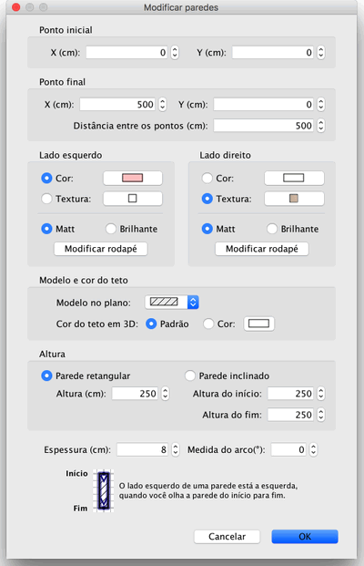

|
|
Editando paredes | ||
|
Voc� pode editar a posi��o e tamanho das paredes, com o mouse ou pelo menu
Plano > Modificar paredes... Quando uma � selecionada no plano, voc� pode tamb�m mover seus cantos, com o indicador de tamanho que aparece em cada parede selecionada.
|

|
|
Quando o ponteiro do mouse est� em cima do inicio ou do fim de uma parede selecionada,
ele muda para indicar que voc� pode arrastar aquele ponto. Enquanto o bot�o do mouse
estiver pressionado, o tamanho da parede � mostrado. Uma parede tamb�m pode ser editada atrav�s de sua janela de propriedades, dando um clique duplo na parede no plano da casa, ou escolhendo Plano > Modificar paredes... depois de selecion�-la. 
Na janela de proprieades, voc� pode modificar as coordenadas de in�cio e fim, as cores
ou textura do lado direito e e esquerdo da parede, sua largura e altura. |
|